Loading required package: cluster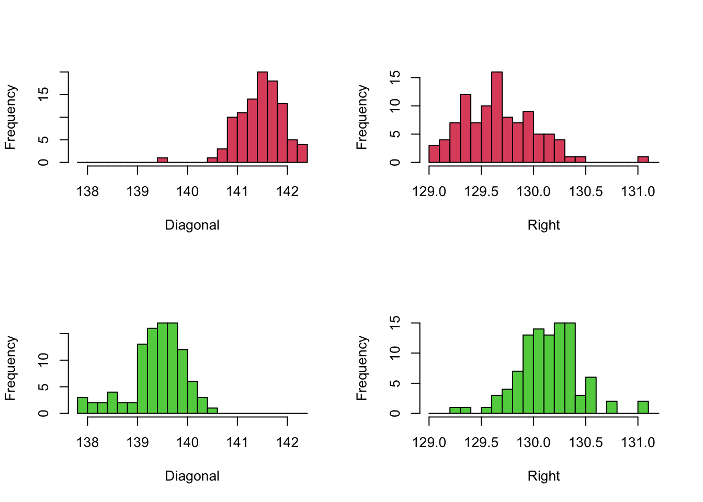
Example: Swiss Banknotes
The banknotes data are six measurements on each of 100 genuine and 100 forged Swiss banknotes.
Carrying out t-tests for differences in means give different significances depending on the variables tested. Comparing genuine and forged notes using the Diagonal or Right measurements gives p-values of \(<2\times 10^{-16}\). This tells us that there is overwhelmingly strong evidence that the mean of these measurements is different in the different groups.
We can compare the distributions of these variables for the two groups by drawing comparable histograms.
Loading required package: cluster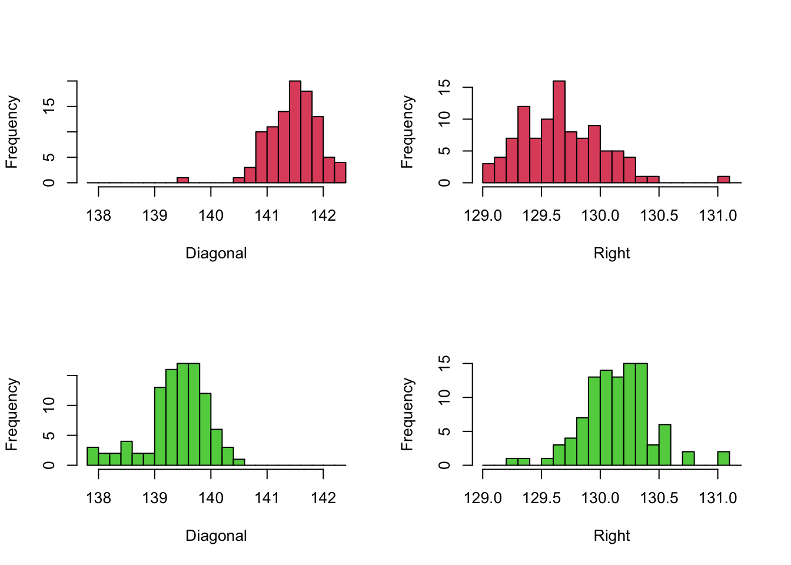
Note that we have drawn the Diagonal variable in the left column, and the Right variabl in the right, and indicated the two groups of banknotes (Genuine vs Fake) with two histograms in each of the columns. The comparison to be made here is between the two histograms in each column. To make this
These simple adjustments ensure the similarities and differences between the plots can be easily, and that the comparisons are fair. If we overlooked using common axis, then the groups would not appear to be as different as they are and we would be distorting the presentation of the data. We should always seek to perform fair comparisons so that any differences we find should be due to the factor or feature we are interested in. In practice, there are many different way to ensure fairness of comparisons and they will vary from problem to problem.
Michelson’s data for the speed of light was gathered in 1879. Here we can compare the values to a known ‘true’ value.
As this data is attempting to measure a known value, we have a “gold standard” to compare against. We can easily indicate this graphically by adding reference lines to our plots.
The abline function can add vertical, horizontal or arbitrary lines to any standard plot:
abline(h=10) - horizontal line at \(y=10\)abline(v=10) - vertical line at \(x=10\)abline(a=1,b=2) - straight line \(y=1+2x\)We can customise the line by adding options:
lty - line type, integerlwd - line width, integercol - colourlibrary(HistData)
data(Michelson)
hist(Michelson$velocity,xlab='Speed of light in km/sec (minus 299,000)',breaks=seq(600,1100,by=20),col=3,main='')
abline(v=734.5, col=2,lty=2,lwd=3)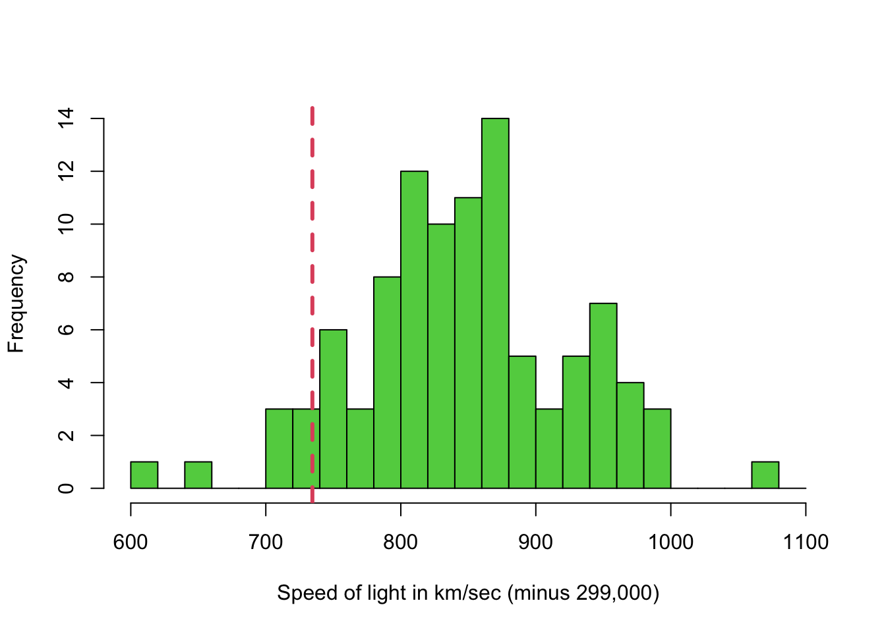
Despite being gathered in 1879, the range of values does actually include the actual speed of light! But the variability in the measurements is quite large, and a 95% confidence interval for the mean would not include it!
Let’s compare the miles per gallon of 32 American cars from 1973-4, to 93 cars in 1993. Here’s we’re combining two different datasets. As “miles per gallon” (MPG) is fairly simply defined, we will assume that the MPG variables in the two data sets are appropriately comparable.
To compare the MPG for the new versus old cars, we could draw:
What might we expect to see here? We might expect that more modern cars would be more efficient and might have higher MPG vaules than the old ones.
First, the boxplots:
library(MASS)
data(Cars93)
library(datasets)
data(mtcars)
boxplot(mtcars$mpg, Cars93$MPG.city,col=3:2)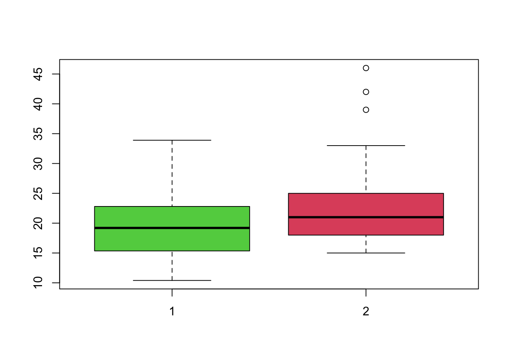
Boxplots drawn like this automatically use a common axis scale, making comparison easier. We can see that the older cars (left) appear to have slightly lower MPG, but with a greater spread. The more modern cars (right) have slightly better and more consistent MPG, with some very efficient case appearing as outliers. Both distributions appear slightly skewed, with more lower values than higher.
We could draw the default histograms:
par(mfrow=c(2,1))
hist(mtcars$mpg,col=3,main='',xlab='mpg for 32 cars from 1973-4')
hist(Cars93$MPG.city,col=2,main='',xlab='mpg in city driving for 93 cars from 1993')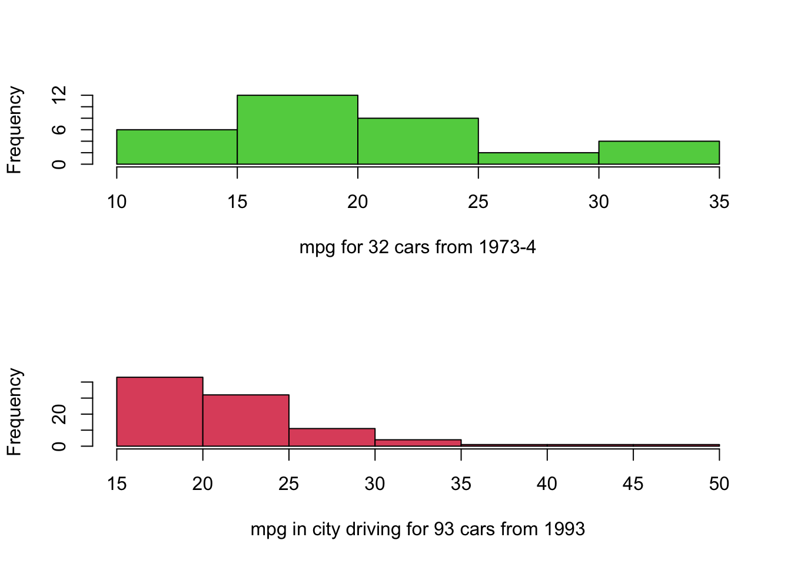
Note how the difference between the groups has been lost, as the individual plots are scaled to the ranges of the data and draw different numbers of bars. If we instead follow the advice from above, we get the following plots:
par(mfrow=c(2,1))
library(MASS)
data(Cars93)
library(datasets)
data(mtcars)
hist(mtcars$mpg,breaks=seq(10,50),col=3,main='',xlab='mpg for 32 cars from 1973-4')
hist(Cars93$MPG.city,breaks=seq(10,50),col=2,main='',xlab='mpg in city driving for 93 cars from 1993')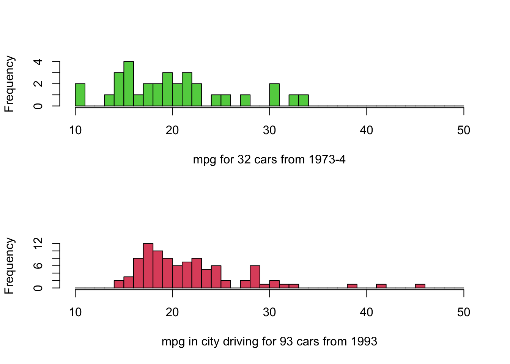
Perhaps the most common type of comparison is to compare subgroups in our data. Typically, these groups are defined by the values of a categorical variable.
Download data: olives
The olives data contain data measuring the levels of various fatty acids in olives produced in different Italian regions and areas. * Area - a factor with levels Calabria, Coast-Sardinia, East-Liguria, Inland-Sardinia, North-Apulia, Sicily, South-Apulia, Umbria, West-Liguria * Region - a factor with levels North, Sardinia, South * palmitic, palmitoleic, stearic, oleic, linoleic, linolenic, arachidic, eicosenoic - all numeric measurements
A working hypothesis is that olives grown in different parts of Italy will have different levels of fatty acids.
Let’s focus on one measurement - palmitic. We can try what we did before and draw a column of three histograms, with common ranges and bars
par(mfrow=c(3,1))
hist(olives$palmitic[olives$Region=="North"], main='North',xlab='palmitic', col=2,breaks=seq(600,1800,by=50))
hist(olives$palmitic[olives$Region=="South"], main='South',xlab='palmitic', col=3,breaks=seq(600,1800,by=50))
hist(olives$palmitic[olives$Region=="Sardinia"], main='Sardinia',xlab='palmitic', col=4,breaks=seq(600,1800,by=50))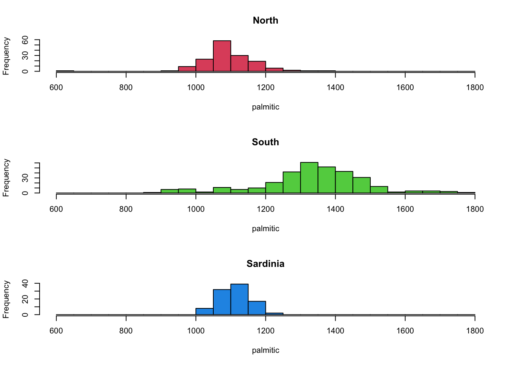
The North and Sardinia groups appear to behave relatively similarly, but the olives from the North have higher levels of this fatty acid.
We can visualise this with a boxplot too, which has a helpful shorthand syntax for plotting the effect of a categorical variables (Region) on a continuous one (palmitic)
boxplot(palmitic~Region, data=olives, col=2:4)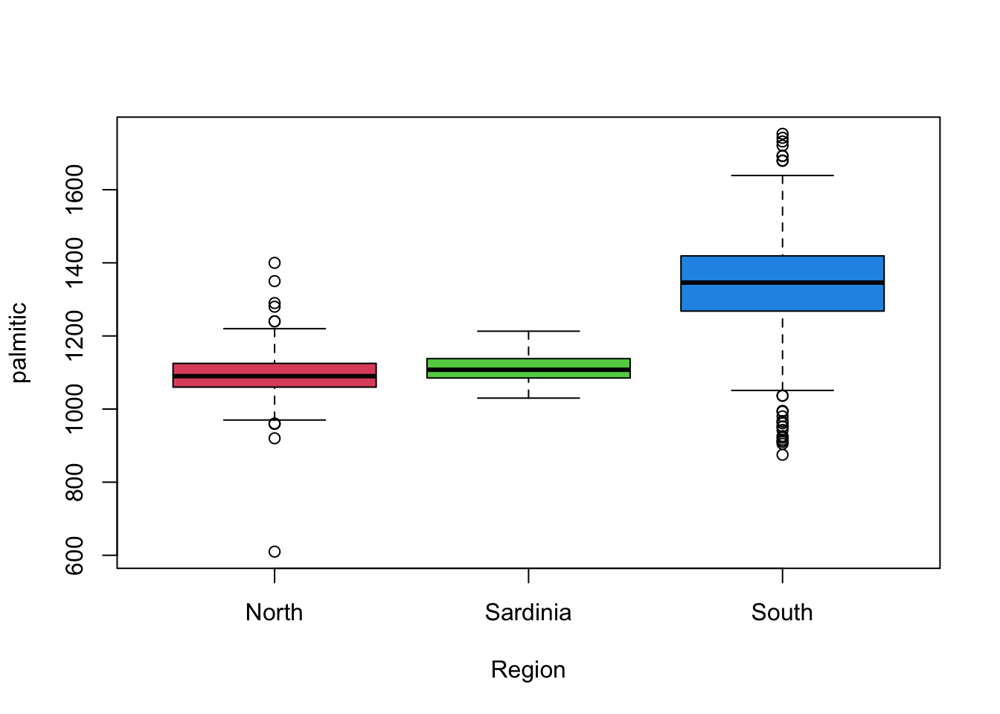
This gives us a similar high-level overview of the main features from the histograms, though without some of the finer detail. It is also debatable whether we would consider many of the points indicated as outliers as being genuine given the histograms.
It can be beneficial to combine mutiple views and plots of the data, to get a fuller picture of the data.
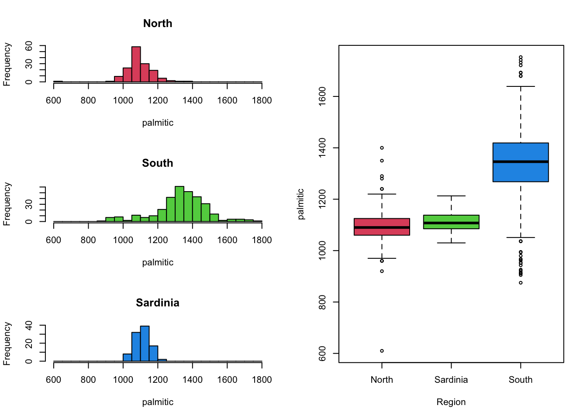
Unfortunately, drawing columns of histograms is only useful when you have a small number of groups to compare. Drawing columns of histograms is less feasible when the number of levels is large. For those cases, boxplots work particularly well to get an impression of the bigger picture. We can then follow this up with a closer look at the histograms of variables of interest.
For example, the variation in palmitic by the Area of origin reveals some substantially different behaviour in the different areas.
boxplot(palmitic~Area,data=olives)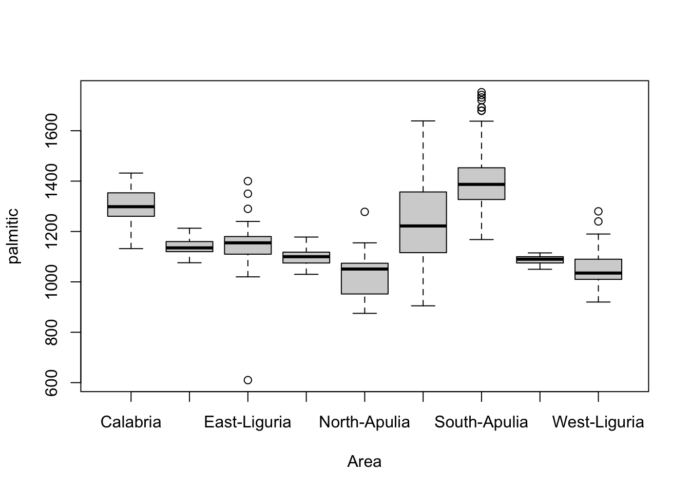
We could even use colour to indicate the other categorical variable, Region.
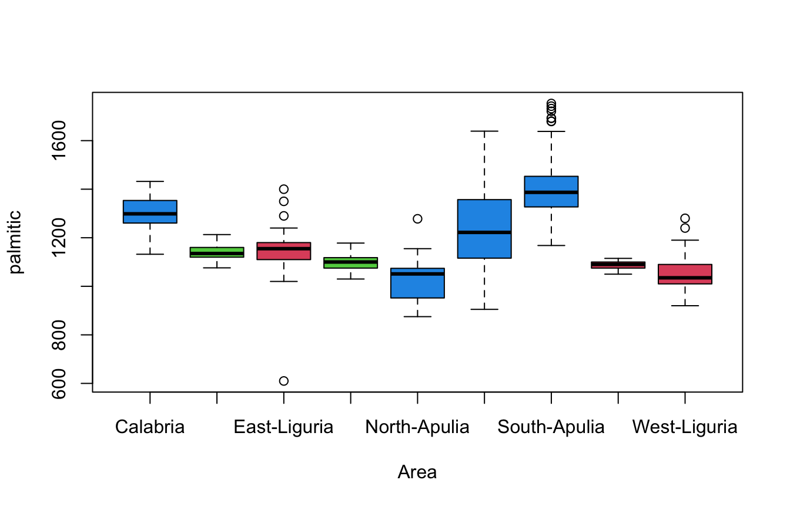
Area horizontally, and using colour to indicate Region allows for exploration of both variables at once.South region.Scatterplots can be used in similar ways to explore and compare the behaviour of sub-groups within the data in relation to two numerical variables. For instance, we can see how palmitic and palmitoleic behave and colour by Area to get:
plot(x=olives$palmitic, y=olives$palmitoleic, col=olives$Area)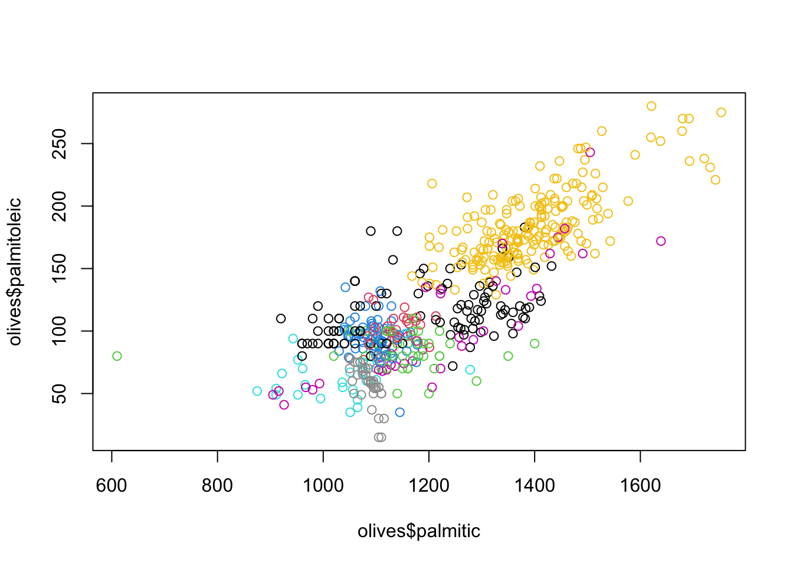
While we can certainly identify some of the groups, not all a clearly visible or easy to distinguish from the other points. This is a problem when using colour to indicate many subgroups. Additionally, some colours like yellow are simply harder to see which also impacts our ability to interpret these results.
A remedy to this issue is to draw a separate mini-scatterplot for each subgroup:
library(lattice)
xyplot(palmitoleic~palmitic|Area, data=olives,pch=16)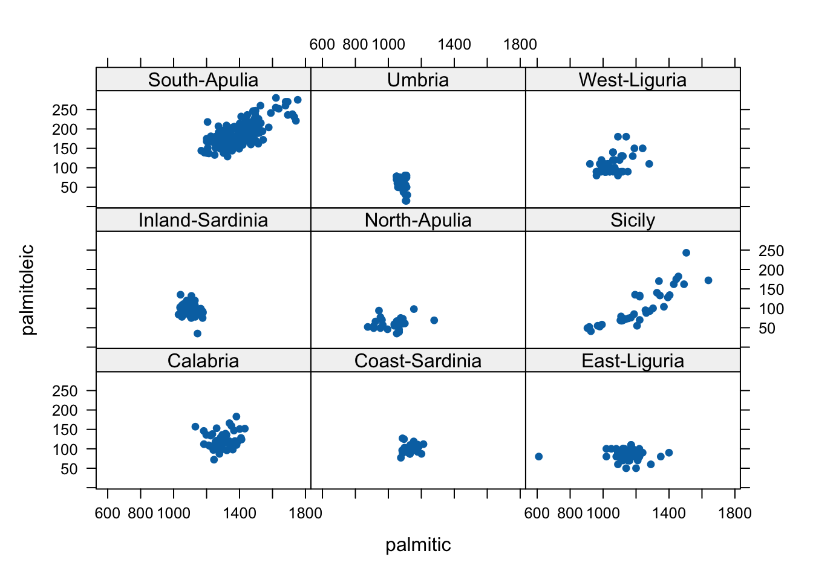
This simplifies the problem of having to distinguish the differently coloured points, and produces a scatterplot of the data for each subgroup. It automatically uses a common x- and y-axis to ensure comparability in scale and location of the plotted points.
As we have been above, sometimes combining multiple different plots together can help emphasise key data features:
These data show an overall summary of the measurements on 43 varieties of coffee beans of two varieties: Arabica and Robusta.
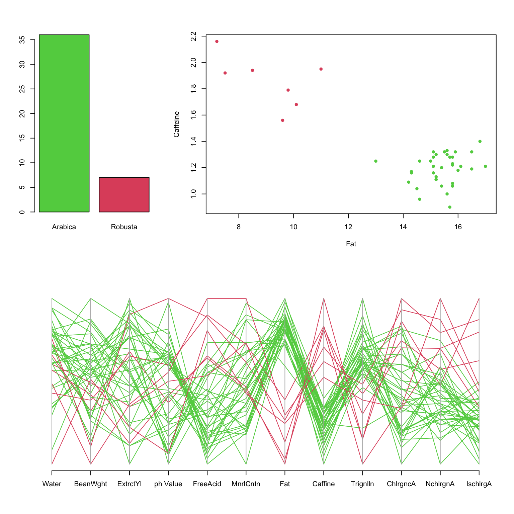
Finding the right combination of graphics also requires exploration and experimentation.
Good analyses depend on good data.
Checking and cleaning data is an essential first step in any analysis, and all our our examples have already been cleaned and filtered. Data quality problems can include:
Missing values in data sets can pose problems as many statistical methods require a complete set of data. Small numbers of missing values can often just be ignored, if the same is large enough. In other cases, the missing values can be replaced or estimated (“imputed”). Data can be missing for many reasons:
A key question is often whether the data values are missing purely by chance, or whether the “missingness” is related to some other aspect of the problem is also important. For example, in a medical trial a patient could be too unwell to attend an appointment and so some of their data will be missing. However, if their absence is due to their treatment or the trial then the absence of these values is actually informative as the patient is adversely affected, even though we don’t have the numbers to go with it.
While we won’t go into much depth on missing data analysis (this is a subject of its own), we will look at some mechanisms to visualise missing data and to help us detect patterns or features.
First, we can make some simple overview plots of the occurrence of missing values in the data. To do this, let’s revisit the data on the Olympic athletes. If we look at the first few rows of data, we note that the symbol NA appears where we might expect data. This indicates that the value is missing.
library(VGAMdata)Loading required package: VGAMLoading required package: stats4Loading required package: splines
Attaching package: 'VGAMdata'The following objects are masked from 'package:VGAM':
dlaplace, dtriangle, laplace, plaplace, ptriangle, qlaplace,
qtriangle, rlaplace, rtriangledata(oly12)
head(oly12)[,1:7] Name Country Age Height Weight Sex DOB
1 Lamusi A People's Republic of China 23 1.70 60 M 1989-02-06
2 A G Kruger United States of America 33 1.93 125 M <NA>
3 Jamale Aarrass France 30 1.87 76 M <NA>
4 Abdelhak Aatakni Morocco 24 NA NA M 1988-09-02
5 Maria Abakumova Russian Federation 26 1.78 85 F <NA>
6 Luc Abalo France 27 1.82 80 M 1984-06-09Here we explore the level of “missingness” by variable for the London Olympic athletes:
library(VGAMdata)
data(oly12)
library(naniar)
gg_miss_var(oly12,show_pct = TRUE)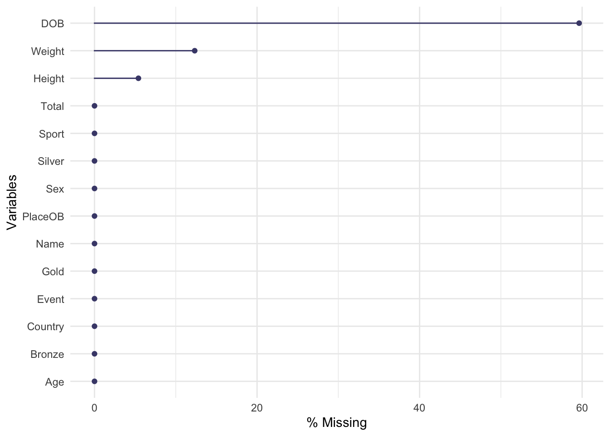
The plot is quite simple, each variable is displayed down the left axis and a line and point have been drawn to indicate the percentage of observations of that variable that are missing. Here we see that almost 60% of the DOB (date of birth) data is missing! This is followed by Weight and Height. The other variables are complete and not missing any data.
We could also consider missingness for each case in the data, rather than the variables, giving the following plot with a similar interpretation:
gg_miss_case(oly12, order_cases = TRUE)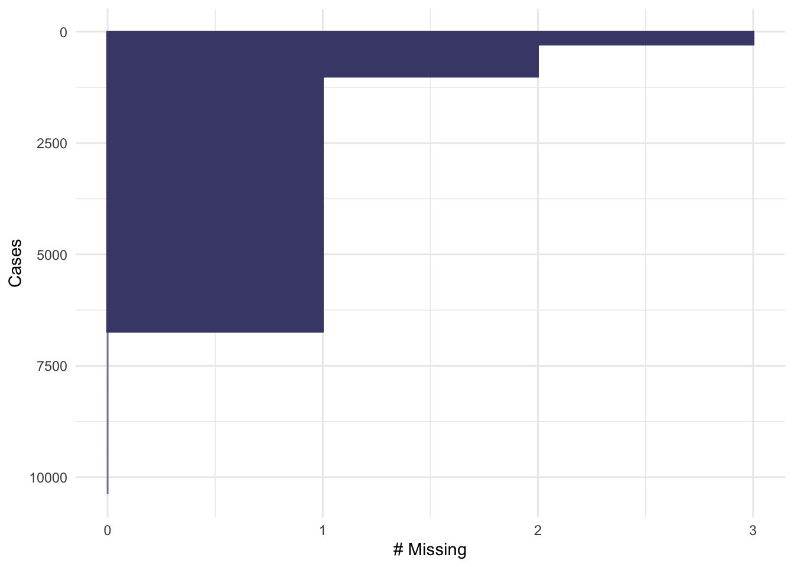
Here, we set order_cases = TRUE so that the cases are ordered with those missing the most data at the top, and the least at the bottom. For this plot, the x-axis represents the number of measurements that are missing for that data item. We can see that a small fraction of the data are missing 3 values (the previous plot tells us that these must be DOB, Height and Weight), a slightly larger fraction are missing 2 values, and the majority of the data are missing one value - again this is almost certainly DOB. Only a minority of data cases are complete.
When confronted with missing data in a data set, it can be tempting to simply discard any data cases which are missing values. If we were to do that for this problem, we would throw away the majority of the data!
A combination of these ideas can be performed in a similar way to a heatmap, giving an excellent first look at a data set:
library(visdat)
vis_dat(oly12)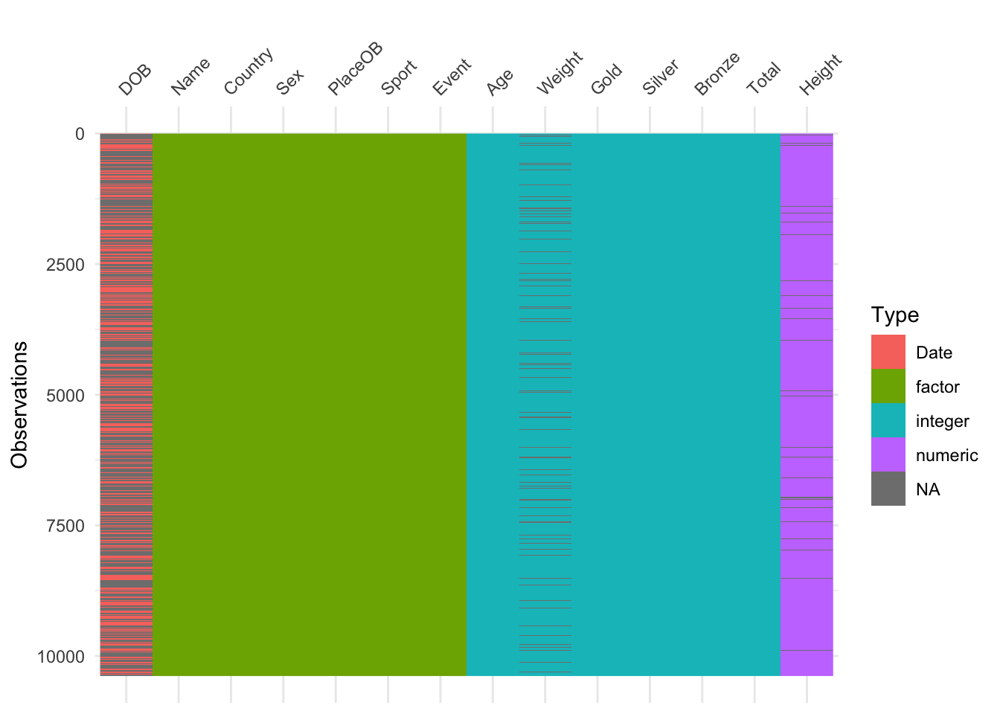
Here we have variables as columns and observations as rows, and each cell is coloured according to the type of data (numeric, integer, factor=categorical, date) or shaded grey for missing (NA). This is good for a quick overview of the data. A simpler version that just highlights the missing values is:
vis_miss(oly12)
Values can be missing one more that one variable at once. In some cases, which values are missing is purely random, but in others there can be patterns in the missingness. For instance, the dataset could be constructed by taking variables from multiple sources, and if an individual is missing entries in one of those sources then all of the variables from that source will be missing. Exploring these patterns of missingness can reveal interesting findings, and identify issues with the data collection.
We can explore patterns of missing values graphically with plots like the following
library(mice)
md.pattern(oly12)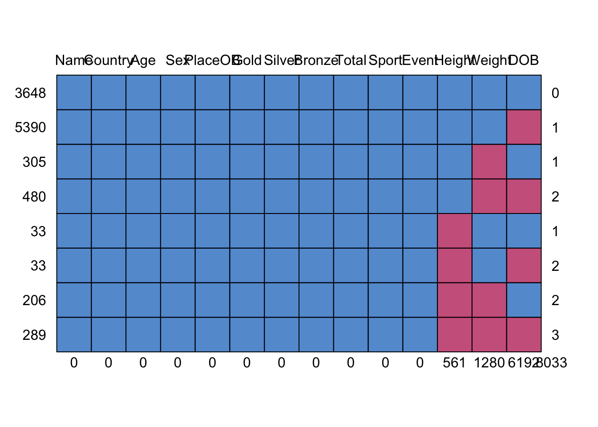
Here we plot the missing data patterns found in the Olympic athletes data. It has identified 8 patterns of missingness, indicated by the rows of the grid. The columns of the grid represent the variables. Where data are complete we have a blue square, and where the data is missing we have a red square. The first row has no red squares and represents the observations that are completed - we have 3648 of these, as indicated in the label to the left. The next row is missing only DOB, as indicated by the red square in the final column, and we have 5390 such cases. At the bottom, we find 289 cases which are missing all of DOB, Height, and Weight.
The simplest and most crudest mechanism is to discard the missing data - the na.omit function will do this. However, this is only justifiable only if a small number or proportion of values are missing. The na.omitfunction will discard entire data points if only one it’s values is missing - be careful!
Often, unless the missingness affects a great many variables and a substantial portion of the data then it is better and safer to simply ‘work around’ the missing parts of the data. More sophisticated solutions impute the missing values from the information available to fill in the holes and create a complete data set - see impute in the mice package.
As we have seen, exploring the patterns in the missingness can reveal problems in data collection, or issues with recording particular variables. It can also be worth exploring whether the presence of missing values depends on other variables in the data - e.g. are we missing patient data because the patient is too ill to attend an appointment (and it this related to their treatment).
An outlier is a data point that is far away from the bulk of the data. Outliers can arise due to
Identification of outliers is important as:
In one dimension, an outlier is easy to graphically detect potential outliers as points far from the rest of the data. The usual rule is to mark potential outliers as being any points more than \(1.5\times IQR\) beyond the upper and lower quartiles of the data. This corresponds to any data outside the whiskers of a box plot. However, this method struggles when the data sets are large as you naturally accumulated points outside of this range in bigger data sets as you see more observations.
library(TeachingDemos)
data(USCrimes)The USCrimes dataset contains historical crime statistics for all US states from 1960-2010. Let’s look at the 2010 Murder rate:
usc2010 <- data.frame(USCrimes[,"2010",])
boxplot(usc2010$MurderRate)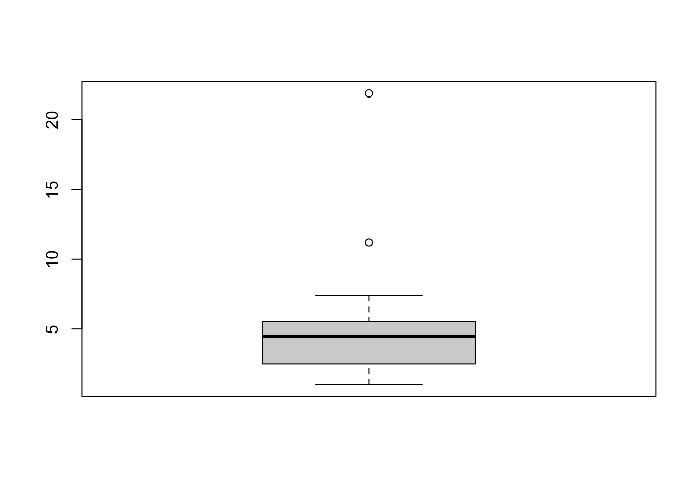
The boxplot has flagged two unusual values. To identify the values, we have to go back to the data. The highest murder rate corresponds for Washington DC and is dramatically far above the others. The second largest is for Louisiana. We can repeat this process for all the individual variables, but it is time consuming to try and identify every individual outlier.
In general, the best strategy is to start with the most extreme points - e.g. Washington DC in the plot above - and work in towards the rest of the data.
Most outliers are outliers on at least one univariate dimension, sometimes several. The more dimensions there are, the more likely it is we will find outliers on some variable or another - so the presence of outliers is, in fact, not that unusual and to be expected for bigger data sets. Unfortunately, the simple rule for identifying an outlier doesn’t really translate to many variables. Scatterplots and Parallel Coordinate Plots can help identify outliers on multiple variables.
Scatterplots can help identify unusual observations on pairs of variables:
plot(x=usc2010$TheftRate,y=usc2010$VehicleTheftRate, pch=16,
xlab='Theft rate per 100,000', ylab='Vehicle theft rate per 100,000')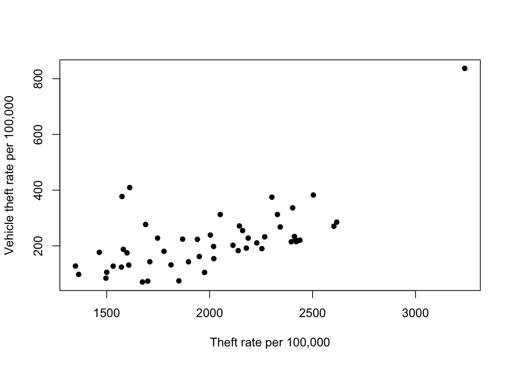
We can see another clear outlier in the top right corner - this is an outlier on both variables. Again, this is Washington DC. However, we do notice a pair of points with Theft rate of ~1600 and Vehicle theft of ~400. These points seem far away from the bulk of the rest of the points - the vehicle theft is unusually high for states with this level of theft. Are they outliers too?
We can apply any of our multivariate visualisations to look for unusual points across many variables. For example, the parallel coordinate plot quite easily singles out Washington DC for a high crime rate in most categories:
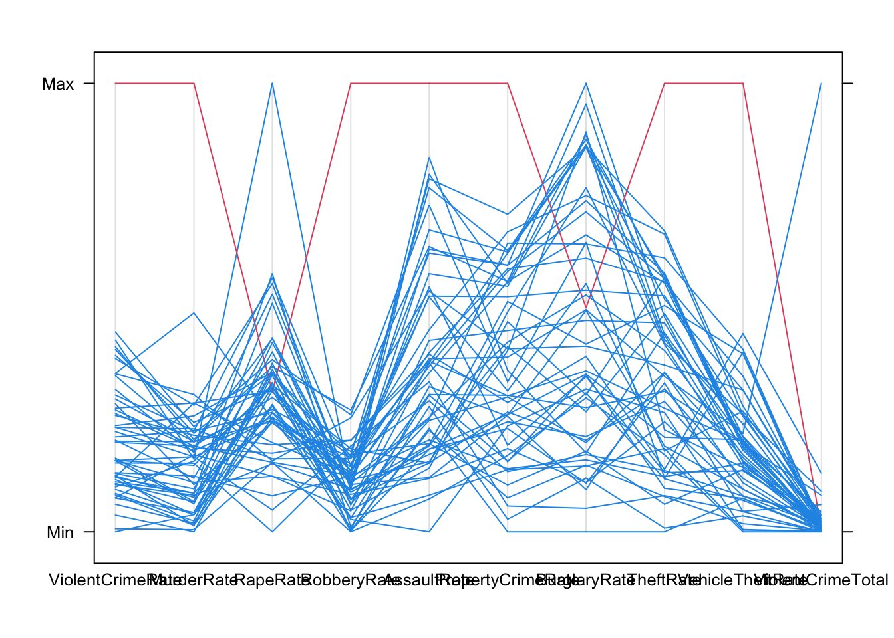
library(ggplot2)
data(diamonds)The diamonds data contain information on the prices and attributes of over 50,000 round cut diamonds. This is quite a large data set, so we would expect to see many outliers.
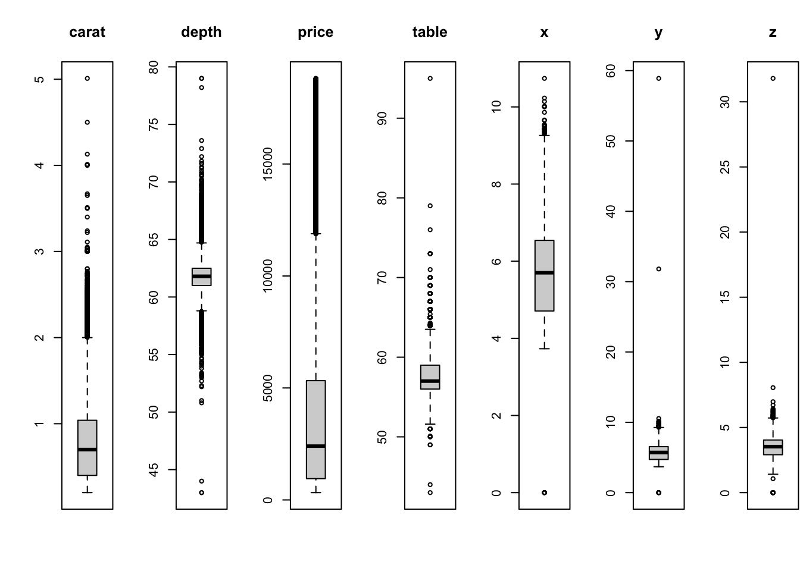
All of these variables are showing outliers to some degree or another! Let’s focus on the diamond width (y) against depth (z) in a scatterplot
plot(x=diamonds$y, y=diamonds$z, pch=16, xlab='width', ylab='depth')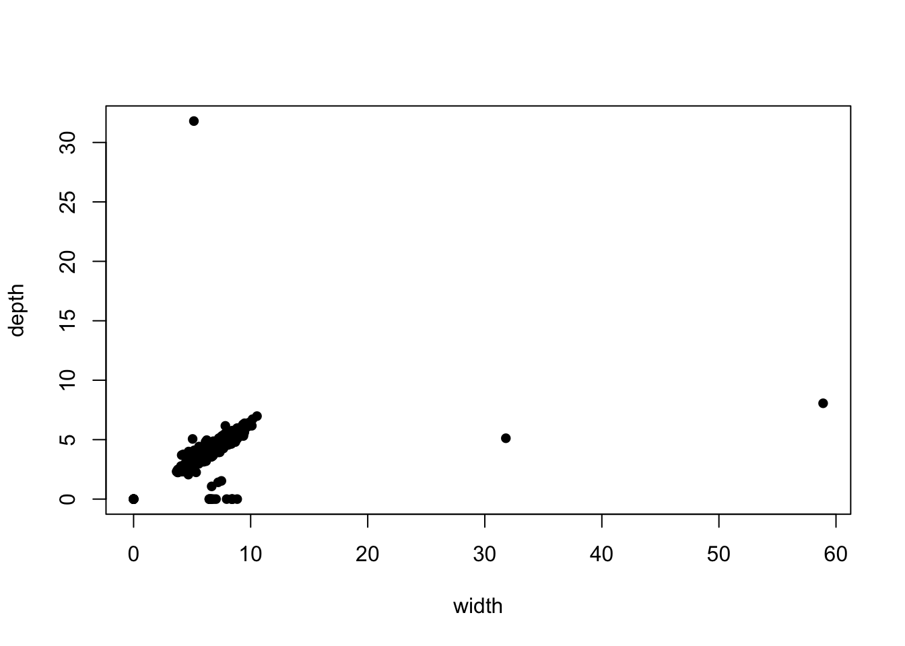
We can see there are clearly some points with implausible values, far away from the main data cloud. If we add transparency, we can see whether these outlying points correspond to one observation or many:
library(scales)
plot(x=diamonds$y, y=diamonds$z, pch=16, xlab='width', ylab='depth', col=alpha('black',0.1))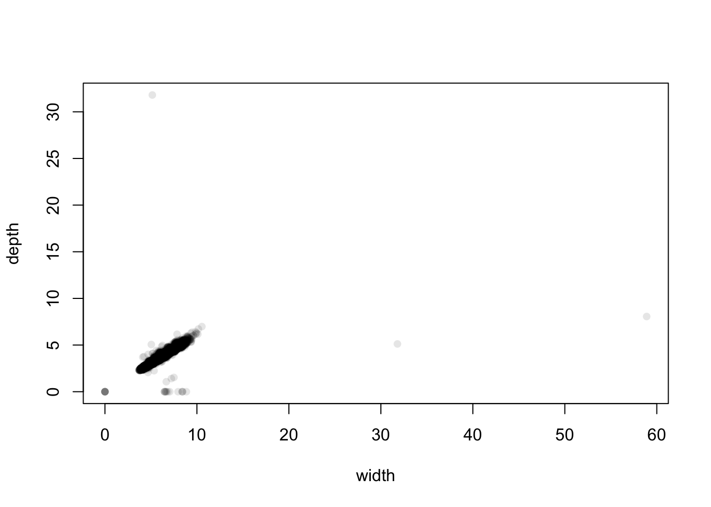
The distant cases are clearly low in number, and the bulk of the data is centred on small values between 5 and 10 mm. We can see that there are two extremely large values of width at about 32 and 59. Bearing mind these are diamonds and these dimensions correspond to widths of 3cm and almost 6cm, these diamonds would be huge - but strangely their depth is normal. This suggests that this is probably an error and maybe they should be 3.2 and 5.9 instead. Similarly, we have one diamond with a depth of 32mm but a width of 5mm.
At the other end of the scale, we seem to have a non-trivial number of diamonds with 0 width and 0 depth, and some with positive width but 0 depth. These are probably indications that the values are not known and they should be treated as missing.
We could discard these unusual points, and re-focus our attention on the main data cloud:
library(scales)
plot(x=diamonds$y, y=diamonds$z, pch=16, xlab='width', ylab='depth', col=alpha('black',0.1), xlim=c(3,11), ylim=c(1,7))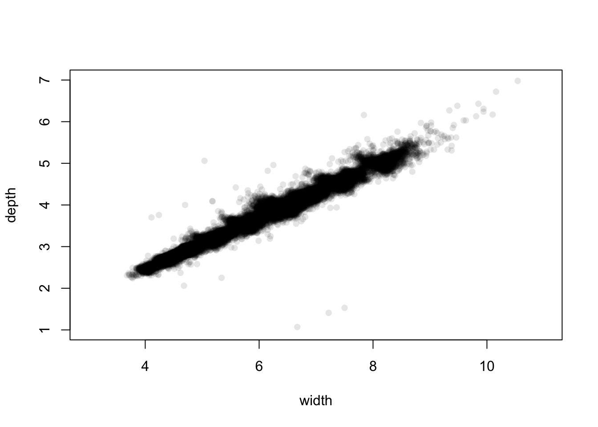
The plot is no longer dominated by the extremes and unusual values. However, zooming in like this does highlight some more points that may need closer scrutiny.
Identifying outliers is relatively straightforward, but what to do next is less obvious. Clear outliers should be inspected and reviewed - are they genuinely surprising values or errors? Values which are clearly errors are often discarded (if they can’t be corrected) or treated as missing. ‘Ordinary’ outliers may be large but genuine - how to handle these depends on what you plan to do with the data next and what the goal is. If you’re analysing data on rainfall and flooding then you will need to pay much more attention to the unusually large values!
A possible outlier strategy could go something like this: 1. Plot the 1-D distribution. Identify any extremes for possible errors that could be corrected. 1. Examine the values of any identified ‘extremes’ on other variables, using scatterplots and parallel coordinate plots. Consider removing cases which are outlying on more than one dimension. 1. Repeat for ‘ordinary’ outliers. 1. If the data has categorical or grouping variables, consider repeating for each group in the data.